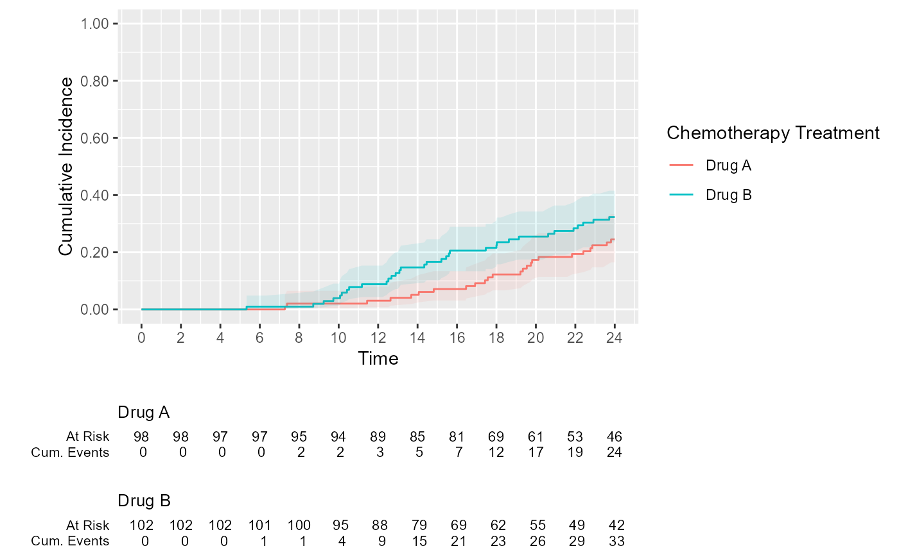

Function creates a cumulative incidence object using the
tidycmprsk::cuminc() function.
Usage
estimate_cuminc(
data = NULL,
strata = NULL,
CNSR = "CNSR",
AVAL = "AVAL",
conf.int = 0.95,
...
)Arguments
- data
A data frame. The dataset is expected to have one record per subject per analysis parameter. Rows with missing observations included in the analysis are removed.
- AVAL, CNSR, strata
These arguments are used to construct a formula to be passed to
tidycmprsk::cuminc(formula=).AVALAnalysis value for Time-to-Event analysis. Default is"AVAL", as per CDISC ADaM guiding principles.CNSRColumn name indicating the outcome and censoring statuses. Column must be a factor and the first level indicates censoring, the next level is the outcome of interest, and the remaining levels are the competing events. Default is"CNSR"strataCharacter vector, representing the strata for Time-to-Event analysis. When NULL, an overall analysis is performed. Default isNULL.
- conf.int
Confidence internal level. Default is 0.95. Parameter is passed to
tidycmprsk::cuminc(conf.level=)- ...
Additional argument passed to
tidycmprsk::cuminc()
Value
A cumulative incidence object as explained at https://mskcc-epi-bio.github.io/tidycmprsk/reference/cuminc.html
Examples
cuminc <-
visR::estimate_cuminc(
data = tidycmprsk::trial,
strata = "trt",
CNSR = "death_cr",
AVAL = "ttdeath"
)
cuminc
#>
#> ── cuminc() ────────────────────────────────────────────────────────────────────
#>
#> • Failure type "death from cancer"
#> strata time n.risk estimate std.error 95% CI
#> Drug A 5.00 97 0.000 0.000 NA, NA
#> Drug A 10.0 94 0.020 0.014 0.004, 0.065
#> Drug A 15.0 83 0.071 0.026 0.031, 0.134
#> Drug A 20.0 61 0.173 0.039 0.106, 0.255
#> Drug B 5.00 102 0.000 0.000 NA, NA
#> Drug B 10.0 95 0.039 0.019 0.013, 0.090
#> Drug B 15.0 75 0.167 0.037 0.102, 0.246
#> Drug B 20.0 55 0.255 0.043 0.175, 0.343
#>
#> • Failure type "death other causes"
#> strata time n.risk estimate std.error 95% CI
#> Drug A 5.00 97 0.010 0.010 0.001, 0.050
#> Drug A 10.0 94 0.020 0.014 0.004, 0.065
#> Drug A 15.0 83 0.082 0.028 0.038, 0.147
#> Drug A 20.0 61 0.204 0.041 0.131, 0.289
#> Drug B 5.00 102 0.000 0.000 NA, NA
#> Drug B 10.0 95 0.029 0.017 0.008, 0.077
#> Drug B 15.0 75 0.098 0.030 0.050, 0.165
#> Drug B 20.0 55 0.206 0.040 0.133, 0.289
#>
#> • Tests
#> outcome statistic df p.value
#> death from cancer 1.99 1.00 0.16
#> death other causes 0.089 1.00 0.77
cuminc %>%
visR::visr() %>%
visR::add_CI() %>%
visR::add_risktable(statlist = c("n.risk", "cum.event"))
